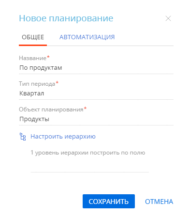
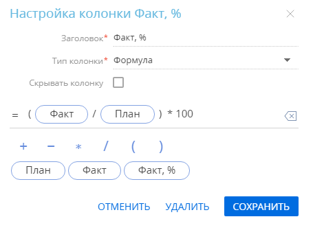
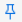
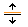

В Creatio вы можете автоматизировать планирование финансовых, количественных и временных показателей работы, а также анализировать фактические результаты, чтобы определить узкие места и повысить эффективность. Для этого в системе предназначен отдельный раздел — Планирование (Рис. 1).
В разделе Планирование вы можете формировать различные планы по ключевым срезам, данные о которых внесены в систему, и рассчитывать фактически полученные значения.
Настройка планирования включает несколько этапов, которые подробно будут рассмотрены в этой статье:
- Настройка объекта и периода планирования.
- Настройка иерархии планирования.
- Внесение данных для планирования.
- Настройка колонок плана.
Также в статье будут рассмотрены:
- Расчет значений плана вручную или автоматически с заданной периодичностью.
- Детализация данных для отслеживания изменения показателей.
1. Выбрать объект и период планирования
При создании плана необходимо выбрать объект (срез) планирования.
Рекомендуем выбирать в качестве объекта сущности, которые редко изменяются и по которым удобно анализировать показатели в длительной перспективе. Такими сущностями в системе являются, например, ответственные менеджеры (контакты), клиенты и партнеры (контрагенты), типы их потребностей (категории продуктов или услуг вашей компании), направления продаж, продукты. Такие сущности как лиды, активности, продажи, счета и заказы лучше использовать для расчета плановых показателей, а не в качестве среза.
Для выбора объекта и периода планирования:
-
Перейдите в раздел Планирование.
-
В правом верхнем углу рабочей области нажмите .
-
В открывшемся окне на вкладке Общее:
-
Введите название нового плана. В нашем примере это “По продуктам”.
-
Выберите тип периода. В нашем примере это “Квартал”. После сохранения плана этот параметр будет недоступен для редактирования. По умолчанию в системе настроены три периода планирования: месяц, квартал и год. Если в вашей компании используются другие периоды, например, полугодие, то вы можете их настроить вручную. Подробнее: Добавить периоды планирования.
-
Укажите объект планирования. В нашем примере это “Продукты”.
Обратите внимание, что после сохранения плана объект планирования будет недоступен для редактирования. Название плана и иерархия данных будут доступны для редактирования по кнопке на панели вкладок плана (Рис. 2).
Рис. 2 — Настройка общих параметров плана -
-
Перейдите на вкладку Автоматизация. Здесь вы можете настроить ежедневное автоматическое сохранение изменений плана как отдельной версии и автоматический расчет в заданное время. В нашем примере необходимо настроить ежедневное автоматическое сохранение расчета плановых и фактических значений продаж на основании оплаченных счетов.
Чтобы настроить время ежедневного автосохранения версий листа, перетяните ползунок Ежедневное сохранение вправо и в обязательном для заполнении поле Запускать в укажите время, когда версия плана будет сохраняться автоматически. Данная настройка — это единственный способ сохранить новую версию плана.
Чтобы выполнять расчет плана автоматически, перетяните ползунок Автоматический расчет вправо и укажите периодичность выполнения, а также часовой пояс пользователя. В нашем примере это будет 23 часа и период наименьшей загрузки системы, с полуночи до 5:59 утра. Часовой пояс — Хельсинки (GMT+02:00).
- Примените изменения по кнопке Сохранить (Рис. 3).
Рис. 3 — Пример настройки автоматического расчета плана
В результате будет создан новый план с указанными настройками. При добавлении объекта, который ранее не использовался, система в фоновом режиме создаст в базе данных приложения новую таблицу, в которой будут сохраняться все настроенные по данному объекту планы.
Далее перейдите к настройке иерархии планирования.
2. Настроить иерархию планирования
Для удобства работы с большими объемами данных объекты планирования можно группировать по заданным условиям. В нашем примере это “Категория”, “Тип” и “Торговая марка”. Вы можете добавить в план до 10 уровней группировки данных. Иерархия настраивается при добавлении плана и при необходимости может быть отредактирована позднее.
Для группировки объектов планирования:
-
Нажмите на странице плана и в окне настройки плана перейдите к группе полей Настроить иерархию.
-
В открывшемся окне выберите колонку, по которой будет осуществляться группировка на первом уровне иерархии. В нашем примере — это колонка Категория.
-
Аналогичным образом выберите колонки для каждого последующего уровня иерархии. В нашем примере — это колонка Тип на втором уровне иерархии и колонка Торговая марка на третьем уровне.
-
Примените изменения по кнопке Сохранить (Рис. 4).
В результате будет создана таблица со сгруппированными по заданным условиям объектами планирования.
Далее перейдите к внесению данных для планирования.
3. Внести данные для планирования
Укажите данные, на основании которых будет осуществляться расчет.
Для этого:
-
Нажмите кнопку Добавить на странице плана.
-
В открывшемся окне выберите записи, для которых будет выполняться планирование, например, список продуктов. Для добавления в план всех доступных записей нажмите Действия —> “Выбрать все”.
- Нажмите кнопку Выбрать.
В результате в левой части плана появится список выбранных записей, сгруппированный по ранее настроенной иерархии (Рис. 5).
Если какую-то из добавленных записей необходимо удалить из плана, то наведите на нее курсор и нажмите .
Если иерархию плана необходимо изменить, то нажмите на панели вкладок плана.
Далее перейдите к настройке колонок.
4. Настроить колонки
Расчет показателей планирования производится в колонках плана. В планах используются колонки следующих типов:
-
Редактируемая — значение вводится пользователем вручную.
-
Выбор из системы — значение выбирается из доступных в системе данных по параметрам, указанным пользователем.
-
Формула — значение рассчитывается по формуле, введенной пользователем, на основании доступных в системе данных.
Для новых планов в каждом периоде настроена только одна колонка — План. По умолчанию это редактируемое значение. Вы можете изменить настройки колонки или удалить ее.
Настроить колонку [План]
Вы можете ввести плановые показатели вручную для каждого элемента в структуре плана или настроить их автоматическое распределение. Настроив автоматическое распределение плановых показателей, вы можете указывать плановые значения только для родительского элемента, а Creatio рассчитает значения для всех вложенных элементов. Для этого:
-
Наведите курсор мыши на заголовок колонки План и нажмите кнопку
 , которая появится слева.
, которая появится слева. -
В окне настройки колонки установите признак Разрешить редактирование групповых показателей.
В результате при изменении плановых показателей новые значения будут сохранены автоматически. Обратите внимание, при этом не будет создаваться новая версия плана. Когда вы добавите в план новые продукты, то сможете отредактировать только плановый показатель для группы, в которую входят эти продукты. Плановые значения для новых записей в группе будут рассчитаны пропорционально количеству вложенных элементов. На самом глубоком уровне значения будут недоступны для редактирования и всегда равны отношению “План предыдущего уровня / количество вложенных уровней”. Однако промежуточные показатели можно редактировать, при этом пересчитаются значения как вложенных, так и родительских элементов.
Настроить колонку [Факт]
-
Нажмите
 справа от колонки План.
справа от колонки План. -
В открывшемся окне укажите название новой колонки (“Факт”) и ее тип (“Выбор из системы”). В окне появится список параметров колонки.
-
Заполните параметры колонки:
-
Раздел — объект системы, из которого будут взяты данные. В нашем примере это “Продукт в счете”. Настройте фильтр таким образом, чтобы при подсчете факта учитывались только счета, оплаченные и частично оплаченные в указанный период.
-
Функция — определение способа расчета. Это может быть сумма, количество или среднее значение. В нашем примере выбираем сумму.
-
Показатель — это значение, на основании которого выполняется расчет. В нашем примере это “Итого, б.в.”.
-
Связь с объектом планирования — поле, по которому осуществляется связь между объектом данных (“Продукт в счете”) и объектом планирования (“Продукт”). В нашем примере она осуществляется через поле “Продукт”.
-
-
Сохраните колонку.
Рис. 6 — Пример настройки колонки типа “Выбор из системы”
Настроить колонку Факт, %
-
Нажмите
справа от колонки Факт. -
В открывшемся окне укажите название новой колонки (“Факт, %”) и ее тип (“Формула”). В окне появятся: поля для ввода формулы, доступные к использованию колонки и математические действия, а также признак Выполнить расчет итогов по формуле.
-
Настройте формулу, по которой будет выполняться расчет значения колонки.
-
Перетяните ползунок Выполнить расчет итогов по формуле вправо, чтобы расчет по формуле применялся на всех уровнях иерархии плана (Рис. 7).
-
Сохраните колонку.
Рис. 7 — Пример настройки колонки типа “Формула”
В результате в таблице появятся настроенные колонки для отображения расчетных показателей.
Рассчитать план
После настройки колонок введите плановые показатели вручную для каждого элемента в структуре плана или настройте их автоматическое распределение, а затем нажмите кнопку Рассчитать.
По завершении расчета вы получите уведомление, которое отобразится на коммуникационной панели. Расчетные значения плана будут заполнены данными, взятыми из системы или рассчитанными по формуле.
Чтобы изменить настройки колонки, наведите курсор мыши на ее заголовок и нажмите кнопку  , которая появится слева от заголовка колонки.
, которая появится слева от заголовка колонки.
Чтобы скрыть колонку, наведите курсор мыши на ее заголовок и нажмите  —> установите признак Скрывать колонку.
—> установите признак Скрывать колонку.
Чтобы удалить колонку, наведите курсор мыши на ее заголовок и нажмите  —> Удалить.
—> Удалить.
При необходимости вы можете изменить последовательность колонок плана, перемещая их мышью (Рис. 8).
Для удобства работы с итоговыми показателями плана колонку Итого в правой части плана можно закрепить по кнопке .
Углубиться в данные (drill down)
Вы можете увидеть, на основании каких данных сформировано определенное значение в листе планирования. Функциональность доступна для ячеек с типом “Выбор из системы”. Значения в ячейках, которые позволяют углубиться в данные, отображаются в виде ссылок. По клику на них выводятся записи, на основании которых рассчитано выбранное значение (Рис. 9).
При работе с детализацией данных вы можете:
- Изменить размеры окна с детализированными данными по кнопке .
- Скрыть или развернуть окно по кнопкам и .
- Настроить колонки по кнопке — > Настроить колонки.
- Экспортировать данные в Excel по кнопке — > Экспорт в Excel.